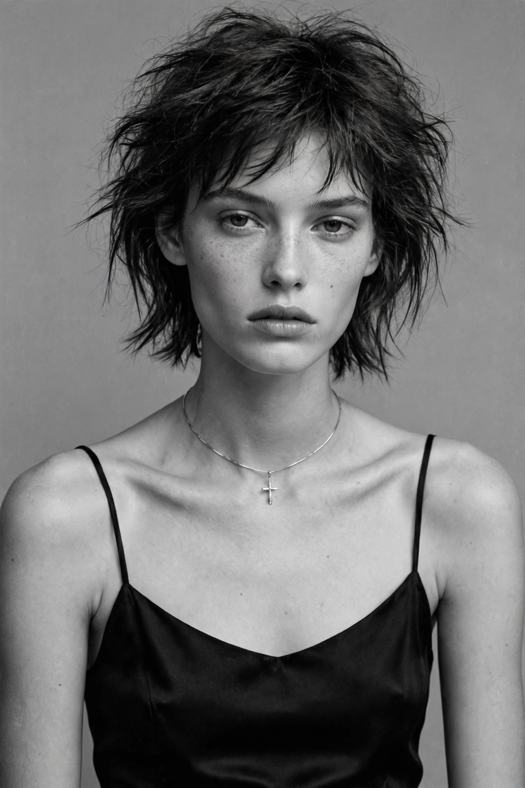

Kate Moss
| Kate Moss | |
 | |
| Born | Katherine Ann Moss, January 16, 1974, Croydon, London, England |
|---|---|
| Occupation | Model, fashion designer, businesswoman |
| Years active | 1988–present |
| Height | 5 ft 7 in (1.70 m) |
| Children | Lila Moss |
Katherine Ann Moss (born 16 January 1974) is an English model. Arriving towards the end of the "supermodel era", Moss rose to fame in the early 1990s as part of the heroin chic fashion trend. Her collaborations with Calvin Klein brought her to fashion fame. She is known for her waifish figure, and for her role in size zero fashion.
Early life and discovery
Moss was born in Croydon, Greater London, and discovered at age 14 at JFK Airport in New York by Sarah Doukas, founder of Storm Model Management, after a family holiday in the Bahamas. Photographer Corinne Day's black-and-white photographs of Moss for The Face magazine in 1990 launched her career.
Career
In 1992 and 1993 Moss fronted Calvin Klein campaigns (including the Obsession fragrance campaign photographed by Mario Sorrenti) that made her the emblem of the "heroin chic" look — a stark contrast to the taller, healthier-looking supermodels such as Cindy Crawford, Elle Macpherson, Claudia Schiffer and Naomi Campbell who preceded her.
Moss has appeared on the covers of hundreds of magazines, walked for houses including Gucci, Dolce & Gabbana, Chanel, Versace and Alexander McQueen, and fronted campaigns for Rimmel, Longchamp, Mango and many others. In 2007 she launched a best-selling clothing line for Topshop. In 2016 she founded the Kate Moss Agency, a talent agency, and signed her daughter Lila Moss, who became a successful model in her own right.
Public image and controversies
In 2005 the Daily Mirror published photographs appearing to show Moss using cocaine; several brands temporarily dropped her, but her career quickly recovered and her earnings rose. She has been in high-profile relationships including with actor Johnny Depp and musician Pete Doherty. Despite controversies, she remains one of the most enduring figures in fashion; in 2013 she received a Special Recognition Award at the British Fashion Awards for her contribution to fashion over 25 years.